1. win4wine
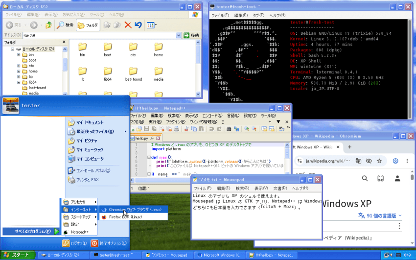
동조선인이 만든 건데
Windows XP의 리소스를 사용해서 리눅스를 윈도우 XP화 시키는 프로젝트임
근데 그냥 이미지 파일 가져다 쓰면 솔직히 비슷한 프로젝트도 많고
그게 그거잖음?
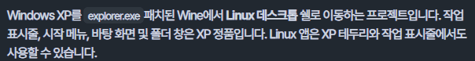
얘는 explorer.exe와 종속dll 전부 가져와서 와인이랑 섞은뒤에 패치한거라
리눅스라는 심장과 뇌에 XP라는 몸뚱아리를 넣은 셈임
사실상 XP로 봐도 되는거지
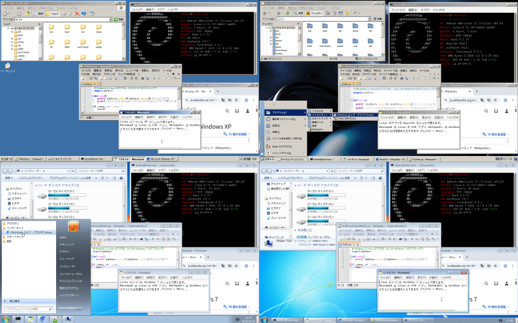
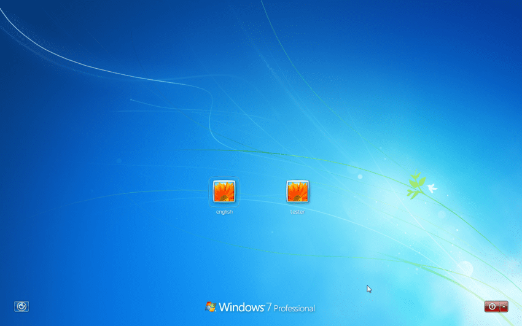
XP말고도 7이나 리액트(이거 왜 금지어)?OS와도 결합이 가능한데 얘내들은 아직 실험단계
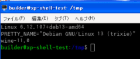
근데 문제는 몸은 XP인데 머리는 리눅스라서 사실 리눅스임
수구
2. One Core API
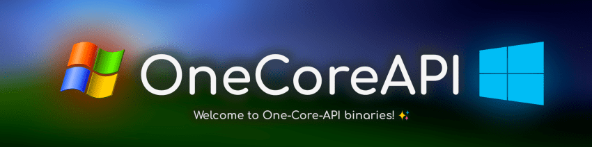
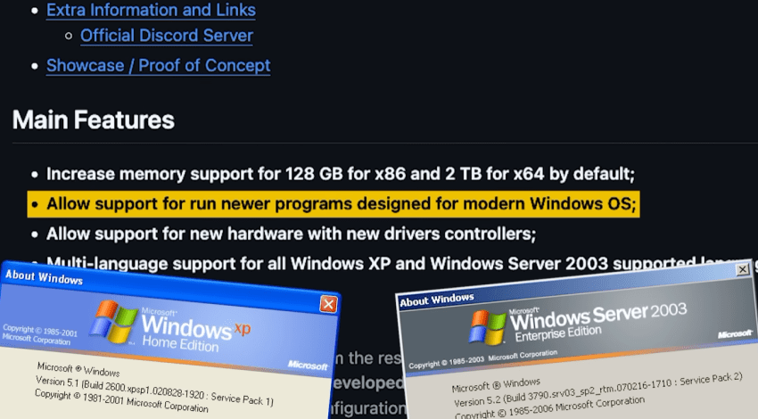
이건 구버전 윈도우 쓰는 사람이라면 다들 알만한 Extended Kernel, KernalEX와 같은 호환성 계층인데
Rea(이게왜금지어?)ctOS 와 Wine 코드 +a를 이용해서 최신 윈도우만 지원하는 프로그램을 지원하게 해줌
당연하게도 해당프로젝트는 Windows XP와 XP 코드를 이용한 서버 2003(과 x64 에디션)만 사용가능함
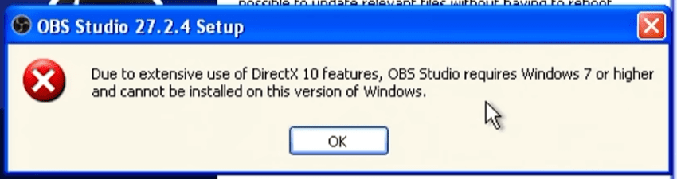
문제점은 호환성 이슈가 여전히 있다는게 좀 문제긴 한데
위와 다르게 진퉁 XP라서 "이건 리눅스야, XP가 아니라" 라는 생각이 사라지는게 장점임
근데 어차피 최신 프로그램들 90%는 실행안되고 유명한 프로그램도 우회설치하던가 좀 복잡함
3. YY-Thunks
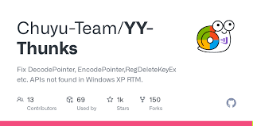
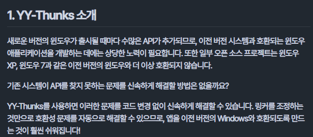
이거는 one core API랑 비슷하지만 약간 다른거임
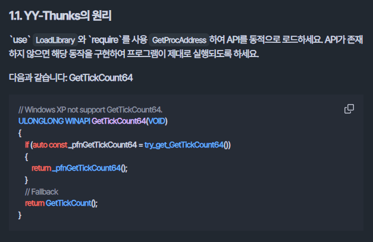
대충 말하면
윈도우 API 호출할때 XP에 없는거 호출하면 얘가 대신 API의 기능을 구현해줌
문제는
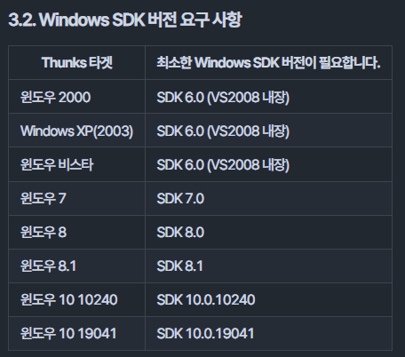
저걸 쓰려면
직접 우리가 빌드해야한다는 점임
그리고 실제로 작동이 잘 될지도 보장되는게 없음
빌드 오래걸려서 해도 결과가 처참해질 수 있음...
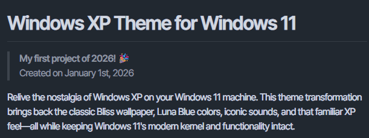
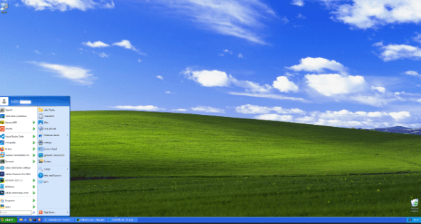
그냥 이런거 쓰면 안돼?
댓글
수집 당시 댓글 172개
· ㅇㅇ · 11.28 04:51:15
ㅇㅇ · 11.28 02:32:50
ㅇㅇ · 11.28 02:33:29
· ㅇㅇ · 11.28 15:14:07
ㅇㅇ · 11.28 02:34:48
대한민국인디언 · 11.28 02:36:05
ㅇㅇ · 11.28 02:37:02
· ㅇㅇ · 11.28 02:39:00
히이잉 · 11.28 02:42:18
ㅇㅇ · 11.28 02:45:38
· ㅇㅇ · 11.28 09:14:51
· ㅇㅇ · 11.28 09:54:36
· ㅇㅇ · 11.28 10:00:07
· ㅇㅇ · 11.28 10:00:26
· ㅇㅇ · 11.28 13:38:56
ㅇㅇ · 11.28 02:53:56
ㅇㅇ · 11.28 03:00:57
ㅇㅇ · 11.28 03:02:18
ㅁㄴㅇㄹ · 11.28 03:03:00
· ㅇㅇ · 11.28 14:18:13
ㅇㅇ · 11.28 03:05:40
히이잉 · 11.28 03:11:31
히이잉 · 11.28 03:31:12
hahaya · 11.28 03:31:17
ㅇㅇ · 11.28 03:51:12
래피 · 11.28 04:07:24
ㅇㅇ · 11.28 04:40:55
호선이 · 11.28 04:45:49
데비룽 · 11.28 04:48:22
rxde · 11.28 04:48:25
· ㅇㅇ · 11.28 04:52:47
· rxde · 11.28 04:55:49
· ㅇㅇ · 11.28 06:55:59
· rxde · 11.28 06:57:24
· 시끄러 · 11.28 07:01:31
· ㅇㅇ · 11.28 07:04:56
· ㅇㅇ · 11.28 07:25:32
· ㅇㅇ · 11.28 13:27:40
· ㅇㅇ · 11.28 14:20:16
· ㅇㅇ · 11.28 17:30:23
ㅇㅇ · 11.28 04:56:47
ㅇㅇ · 11.28 05:01:20
ㅇㅇ · 11.28 05:08:48
ㅇㅇ · 11.28 05:21:31
형아어디가 · 11.28 05:24:37
· 형아어디가 · 11.28 05:24:42
· 형아어디가 · 11.28 05:24:55
· 형아어디가 · 11.28 05:25:00
· 형아어디가 · 11.28 05:25:26
· 형아어디가 · 11.28 05:25:30
· 형아어디가 · 11.28 05:25:35
· 해나이 · 11.28 06:37:10
· ㅇㅇ · 11.28 08:19:59
· ㅇㅇ · 11.28 10:01:08
· 형아어디가 · 11.28 15:13:28
ㅇㅇ · 11.28 05:44:09
· ㅇㅇ · 11.28 06:08:38
ㅇㅇ · 11.28 05:47:55
ㅇㅇ · 11.28 06:16:44
· ㅇㅇ · 11.28 07:36:05
ㅇㅇ · 11.28 06:17:43
ㅇㅇ · 11.28 06:19:17
IN · 11.28 06:37:36
ㅇㅇ · 11.28 06:38:04
ㅇㅇ · 11.28 06:54:57
ㅇㅇ · 11.28 06:59:53
폴신짱짱맨 · 11.28 07:06:15
· 폴신짱짱맨 · 11.28 07:06:37
· 폴신짱짱맨 · 11.28 07:07:35
· 폴신짱짱맨 · 11.28 07:09:37
· ㅇㅇ · 11.28 07:12:19
· 폴신짱짱맨 · 11.28 07:16:22
Doll · 11.28 07:16:19
ㅇㅇ · 11.28 07:22:11
ㅇㅇ · 11.28 07:24:29
ㅇㅇ · 11.28 07:38:57
· ㅇㅇ · 11.28 07:39:15
ㅇㅇ · 11.28 07:42:01
ㅇㅇ · 11.28 07:48:10
· ㅇㅇ · 11.28 07:50:58
· ㅇㅇ · 11.28 07:51:10
ㅇㅇ · 11.28 07:49:28
· ㅇㅇ · 11.28 10:22:36
ㅇㅇ · 11.28 08:26:22
실비치노 · 11.28 08:39:28
ㅁㄴㅇㄹ · 11.28 09:37:04
ㅇㅇ · 11.28 10:02:40
ㅇㅇ · 11.28 10:16:49
· ㅇㅇ · 11.28 10:22:33
ㅇㅇ · 11.28 10:22:27
ㅇㅇ · 11.28 10:59:08
아나나스 · 11.28 11:42:21
주소킹 · 11.28 12:23:27
· 주소킹 · 11.28 12:23:30
160 · 11.28 12:28:57
ㅇㅇ · 11.28 13:32:08
ㅇㅇ · 11.28 13:43:06
ㅇㅇ · 11.28 16:38:29
ㅇㅇ · 11.28 17:29:08
ㅇㅇ · 11.28 19:24:39
yukikaze · 11.25 20:05:42
· ㅇㅇ · 11.25 20:10:28
· yukikaze · 11.25 20:10:57
암타황제강시현 · 11.28 01:32:22
ㅇㅇ · 11.28 01:32:36
· ㅇㅇ · 11.28 01:33:29
· ㅇㅇ · 11.28 02:43:09
· ㅇㅇ · 11.28 02:57:41
· ㅇㅇ · 11.28 03:05:36
· ㅇㅇ · 11.28 03:05:56
· ㅇㅇ · 11.28 03:06:45
· ㅇㅇ · 11.28 03:09:22
· ㅇㅇ · 11.28 03:10:00
· ㅇㅇ · 11.28 03:12:19
· ㅇㅇ · 11.28 03:13:26
· ㅇㅇ · 11.28 03:27:30
· ㅇㅇ · 11.28 03:28:55
· ㅇㅇ · 11.28 03:47:43
· 번개장터 · 11.28 03:50:46
· ㅇㅇ · 11.28 03:51:31
· ㅇㅇ · 11.28 03:54:32
· ㅇㅇ · 11.28 04:01:10
· ㅇㅇ · 11.28 04:52:59
· ㅇㅇ · 11.28 05:24:57
· ㅇㅇ · 11.28 11:05:54
ㅇㅇ · 11.28 01:33:00
· ㅇㅇ · 11.28 01:43:17
· 킹갓롤황 · 11.28 01:46:08
· ㅇㅇ · 11.28 01:53:01
ㅇㅇ · 11.28 01:33:11
ㅇㅇ · 11.28 01:33:58
고환타격 · 11.28 01:34:37
ㅇㅇ · 11.28 01:34:38
· ㅇㅇ · 11.28 01:43:50
· ㅇㅇ · 11.28 01:45:05
· ㅇㅇ · 11.28 01:51:28
· ㅇㅇ · 11.28 03:13:13
· ㅇㅇ · 11.28 07:31:14
· ㅇㅇ · 11.28 11:06:33
ㅇㅇ · 11.28 01:36:43
· ㅇㅇ · 11.28 01:40:31
· ㅇㅇ · 11.28 01:48:13
ㅇㅇ · 11.28 01:37:04
ㅇㅇ · 11.28 01:37:05
ㅇㅇ · 11.28 01:38:17
ㅇㅇ · 11.28 01:39:02
· ㅇㅇ · 11.28 01:39:53
· ㅇㅇ · 11.28 02:21:33
히이잉 · 11.28 01:39:35
ㅇㅇ · 11.28 01:39:38
· ㅇㅇ · 11.28 01:44:16
· ㅇㅇ · 11.28 01:46:00
· ㅇㅇ · 11.28 05:55:32
· ㅇㅇ · 11.28 07:32:26
악의꽃 · 11.28 01:41:10
킹갓롤황 · 11.28 01:45:25
실베현자 · 11.28 01:48:10
리눅스
써라
· ㅇㅇ · 11.28 01:54:26
앱등이 · 11.28 01:50:07
· ㅇㅇ · 11.28 02:44:36
· ㅇㅇ · 11.28 04:50:14
· ㅇㅇ · 11.28 09:47:25
파치카 · 11.28 01:52:29
· ㅇㅇ · 11.28 01:54:09
ㅇㅇ · 11.28 01:54:30
· ㅇㅇ · 11.28 02:16:36
ㅇㅇ · 11.28 01:58:58
히이잉 · 11.28 02:01:35
ㅇㅇ · 11.28 02:02:45
ㅇㅇ · 11.28 02:03:43
ㅇㅇ · 11.28 02:05:49
· ㅇㅇ · 11.28 02:06:12